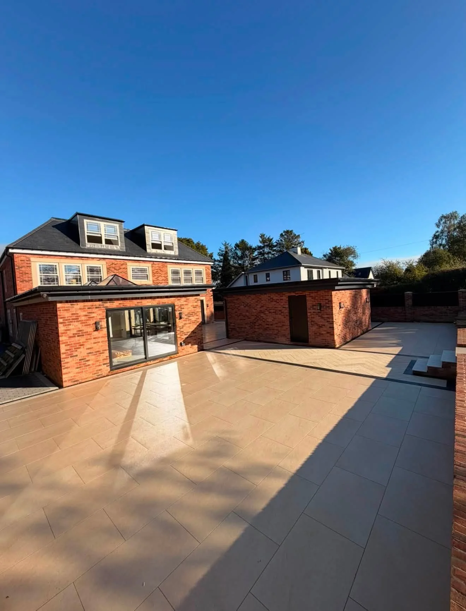
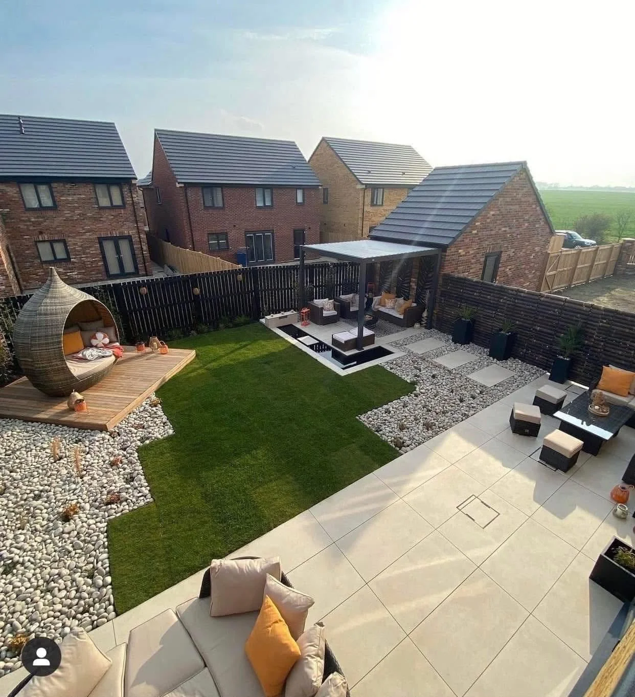

DURHAM · PAVING, LANDSCAPES & GROUNDWORKS
Outside space.
Beautifully considered.
Patios, driveways and garden transformations. Pearson Paving brings together surfaces, boundaries and the finishing details that make a space your own.
MADE FOR OUTDOOR LIVING
Fresh spaces.
Lasting impressions.
A terrace for summer evenings. A driveway with a defined edge. A garden where the lawn, paving and timber details work together.
Pearson Paving, Landscapes and Groundworks is based in Durham. Browse the portfolio for ideas, then tell us about the space you want to change.
Talk through your ideas →

THE DETAIL MAKES THE DIFFERENCE
Good lines.
Thoughtful finishes.
Large-format paving meets herringbone detail, dark borders and a linear drainage channel. These photographs show the layout and the close-up finish of the same patio.
Explore patios & paving →PEARSON PROJECT GALLERY
The spaces.
The craft. The detail.
Explore paving, driveways and garden transformations. Tap any image to see the full photograph.
PROJECTS IN MOTION
Watch us
work.
Take a closer look at the paving, timber finishes and garden details in these two project videos.
Discuss your project →BEFORE & AFTER
A fresh start.
A clearer garden.
These photographs show an overgrown garden followed by a central paved path, gravel beds and contrasting edging.
Discuss your garden transformation →PEARSON PAVING
From your doorstep
to your garden.
Patios, driveways, landscaping and groundworks, with project photographs showing a wide range of outdoor spaces and finishes.
Large-format paving, block driveways, steps and defined borders.
Lawns, timber fencing, seating areas and paving working together.
Serving Durham and the North East. Share your postcode and plans to discuss availability.
DURHAM & THE NORTH EAST
Let’s make more of your outside space.
Our North East service areas. Send your postcode to confirm availability.
CUSTOMER RECOMMENDATIONS
100% recommendBased on 6 Facebook reviews.
CUSTOMER RECOMMENDATIONS
What customers say.
“The lads worked through 30 degree heat wave and completed the job to a high standard.”
Ryan Leggett
“From the first quote Matty was really professional and gave good advice and suggestions.”
Gabi Summers
“The whole job was done really well and they’re a really tidy team, clearing up as they went and at the end of the job.”
Nova Dawson
BEFORE WE GET STARTED
A few useful answers.
What can Pearson Paving help with?
Patios, paving, driveways, landscaping, fencing and groundworks enquiries. Share your ideas and photographs so the work can be discussed.
Where are you based?
Durham, with service areas across the North East listed above. Send your postcode to confirm availability.
What should I send for a quote?
Your postcode, photographs, approximate dimensions and the finish you have in mind. Mention access, changes in levels and any existing features you want to keep.
Can I see project videos?
Yes. The Watch us work section includes two project videos. Tap play to view them with standard playback controls.
Does the form send automatically?
No. It opens WhatsApp with your chosen service and details ready to review. Add photographs and send it when you are ready.
YOUR NEXT OUTDOOR PROJECT
Start with
your ideas.
Tell Pearson Paving about your patio, driveway or garden plans. Share your postcode and a few details to begin the conversation.
PEARSON PAVING · DURHAM
Ready for
a fresh outlook?
Talk to Pearson Paving about your outside space.